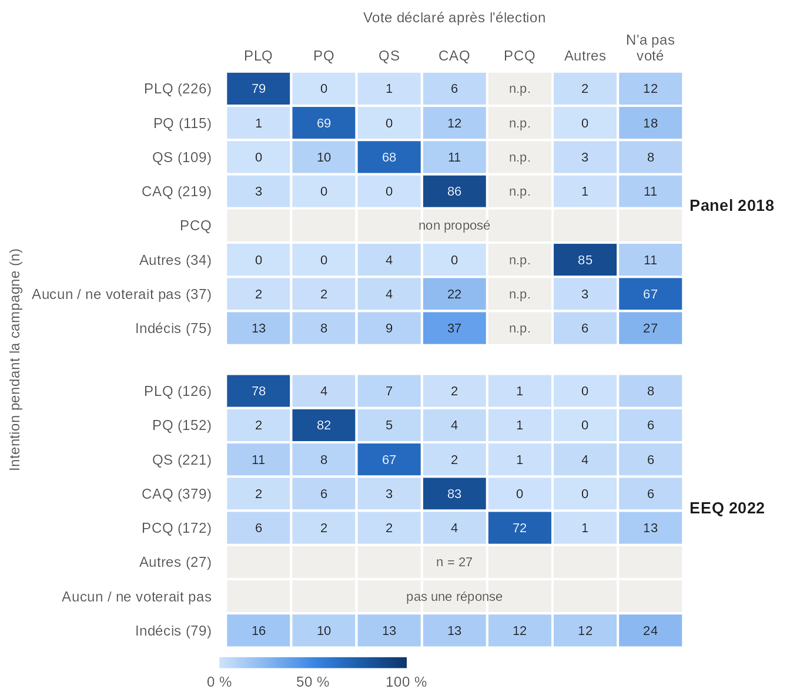
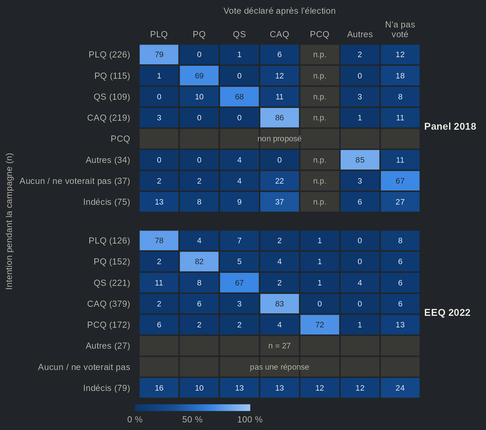
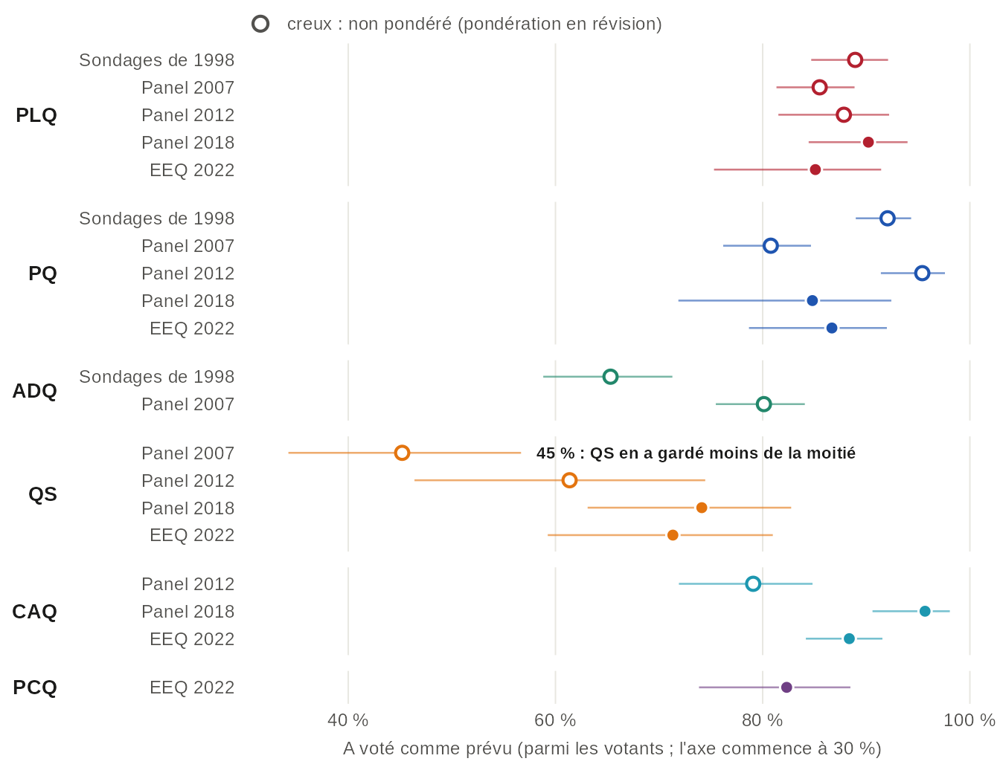
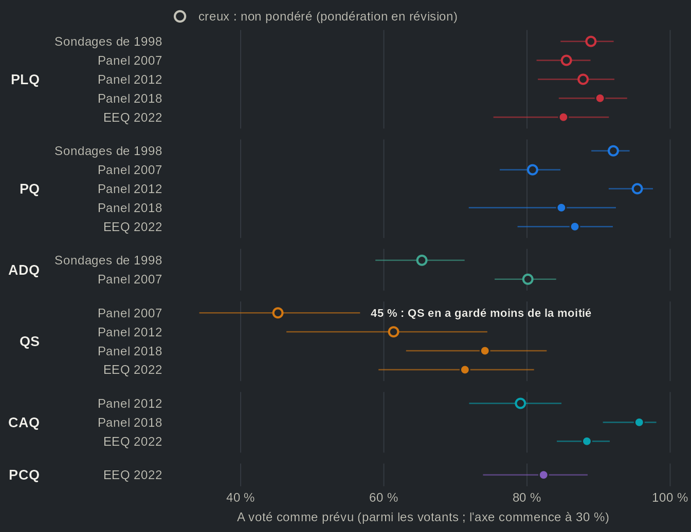
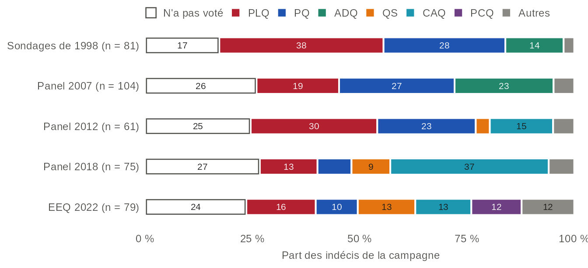
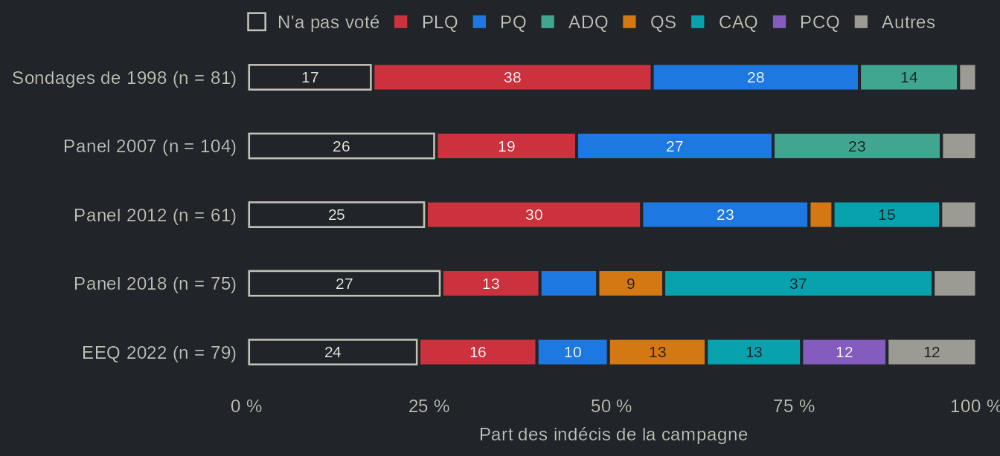

Les élections québécoises se jouent-elles pendant la campagne ?
Source:vignettes/articles/fr-transitions.Rmd
fr-transitions.RmdDepuis l’élection fédérale de 1988, on sait que l’opinion peut bouger considérablement entre le déclenchement d’une campagne et le jour du vote (Johnston et collaborateurs, 1992). On dit souvent que les élections québécoises se jouent à la dernière minute, et l’idée revient chaque fois que les sondages ratent le résultat, comme en 1998 et en 2018. En 1998, les sondages donnaient l’avance au Parti québécois (PQ), mais le Parti libéral du Québec (PLQ) a obtenu davantage de votes valides (43,6 % contre 42,9 %). En 2018, ils annonçaient une lutte serrée entre le PLQ et la Coalition avenir Québec (CAQ), qui l’a emporté par 13 points. Chaque fois, on a cherché une partie de l’explication du côté des électeurs qui ont changé d’idée en fin de campagne et du côté des discrets, qui refusaient de révéler leur intention. Durand et Blais (1999) rejettent l’hypothèse d’une remontée libérale tardive comme celle d’une participation moindre des péquistes, et attribuent l’erreur à l’échantillonnage et au comportement des non-répondants ; pour 2018, ils concluent que les déplacements de dernière minute et le vote des discrets expliquent l’essentiel de l’écart (Durand et Blais, 2020).
Or, une enquête transversale dit comment le vote s’est finalement réparti, pas qui s’est déplacé. Les enquêtes par panel le permettent, puisqu’elles interrogent les mêmes personnes pendant la campagne et après le scrutin. Cinq enquêtes électorales québécoises l’ont fait, des sondages CROP et CREATEC de 1998 à l’Étude électorale québécoise (EEQ) de 2022, dont les panels menés par Claire Durand en 2007, 2012 et 2018. Nous nous en servons pour poser une question simple : combien d’électrices et d’électeurs québécois changent d’idée pendant une campagne, et qui en profite ? De 72 % à 78 % des votants ont déclaré le parti qu’ils avaient nommé pendant la campagne. Les indécis forment un petit groupe, de 6 % à 10 % des votants, et ceux qui sont passés d’un parti à un autre sont plus nombreux qu’eux dans tous les panels sauf celui de 2018, où les deux groupes sont de taille comparable. Ces mouvements modifient rarement la part d’un parti de plus de quelques points. Le gain le plus important est celui que le bilan de 2018 avait relevé : chez les mêmes répondants, la CAQ gagne 6,1 points entre l’intention et le vote, et 37 % des indécis de cette année-là ont voté CAQ. En somme, une campagne québécoise déplace beaucoup d’électeurs, mais, une fois les gains et les pertes additionnés, peu de votes.
La plupart des électeurs ont fait ce qu’ils avaient dit


Source : qesR. Répondants interrogés pendant la campagne et après l'élection, dans le panel Durand 2018 et l'EEQ 2022, pondérés avec la pondération postélectorale. Rangées : le parti prévu, avec le nombre de répondants ; les indécis n'ont nommé aucun parti, même quand on leur demandait (là où le panel le demandait) vers lequel ils penchaient. Chaque rangée inclut les personnes qui n'ont pas voté. Les cases grises n'ont pas de valeur : le panel 2018 ne proposait pas le PCQ (n.p.), la question de campagne de 2022 n'avait pas de réponse « ne voterait pas », et les rangées de moins de 30 répondants ne sont pas tracées. Les intervalles de confiance et les panels de 1998, 2007 et 2012 sont dans la vue en tableau.
Vue en tableau
| Élection | Étude | Intention | Vote déclaré | % de la rangée [IC à 95 %] | n (rangée) | Pondération |
|---|---|---|---|---|---|---|
| 1998 | Sondages de 1998 | PLQ | PLQ | 80,1 [75,3 ; 84,1] | 311 | non pondéré (pondération en révision) |
| 1998 | Sondages de 1998 | PLQ | PQ | 5,1 [3,2 ; 8,2] | 311 | non pondéré (pondération en révision) |
| 1998 | Sondages de 1998 | PLQ | ADQ | 4,5 [2,7 ; 7,5] | 311 | non pondéré (pondération en révision) |
| 1998 | Sondages de 1998 | PLQ | QS | — | 311 | non pondéré (pondération en révision) |
| 1998 | Sondages de 1998 | PLQ | CAQ | — | 311 | non pondéré (pondération en révision) |
| 1998 | Sondages de 1998 | PLQ | PCQ | — | 311 | non pondéré (pondération en révision) |
| 1998 | Sondages de 1998 | PLQ | Autres | 0,3 [0,0 ; 2,2] | 311 | non pondéré (pondération en révision) |
| 1998 | Sondages de 1998 | PLQ | N'a pas voté | 10,0 [7,1 ; 13,8] | 311 | non pondéré (pondération en révision) |
| 1998 | Sondages de 1998 | PQ | PLQ | 3,9 [2,5 ; 6,2] | 433 | non pondéré (pondération en révision) |
| 1998 | Sondages de 1998 | PQ | PQ | 85,7 [82,1 ; 88,7] | 433 | non pondéré (pondération en révision) |
| 1998 | Sondages de 1998 | PQ | ADQ | 2,5 [1,4 ; 4,5] | 433 | non pondéré (pondération en révision) |
| 1998 | Sondages de 1998 | PQ | QS | — | 433 | non pondéré (pondération en révision) |
| 1998 | Sondages de 1998 | PQ | CAQ | — | 433 | non pondéré (pondération en révision) |
| 1998 | Sondages de 1998 | PQ | PCQ | — | 433 | non pondéré (pondération en révision) |
| 1998 | Sondages de 1998 | PQ | Autres | 0,9 [0,3 ; 2,4] | 433 | non pondéré (pondération en révision) |
| 1998 | Sondages de 1998 | PQ | N'a pas voté | 6,9 [4,9 ; 9,7] | 433 | non pondéré (pondération en révision) |
| 1998 | Sondages de 1998 | ADQ | PLQ | 13,1 [9,5 ; 17,8] | 259 | non pondéré (pondération en révision) |
| 1998 | Sondages de 1998 | ADQ | PQ | 15,4 [11,5 ; 20,4] | 259 | non pondéré (pondération en révision) |
| 1998 | Sondages de 1998 | ADQ | ADQ | 56,0 [49,9 ; 61,9] | 259 | non pondéré (pondération en révision) |
| 1998 | Sondages de 1998 | ADQ | QS | — | 259 | non pondéré (pondération en révision) |
| 1998 | Sondages de 1998 | ADQ | CAQ | — | 259 | non pondéré (pondération en révision) |
| 1998 | Sondages de 1998 | ADQ | PCQ | — | 259 | non pondéré (pondération en révision) |
| 1998 | Sondages de 1998 | ADQ | Autres | 1,2 [0,4 ; 3,5] | 259 | non pondéré (pondération en révision) |
| 1998 | Sondages de 1998 | ADQ | N'a pas voté | 14,3 [10,5 ; 19,1] | 259 | non pondéré (pondération en révision) |
| 1998 | Sondages de 1998 | Autres | PLQ | n < 30 | 26 | non pondéré (pondération en révision) |
| 1998 | Sondages de 1998 | Autres | PQ | n < 30 | 26 | non pondéré (pondération en révision) |
| 1998 | Sondages de 1998 | Autres | ADQ | n < 30 | 26 | non pondéré (pondération en révision) |
| 1998 | Sondages de 1998 | Autres | QS | — | 26 | non pondéré (pondération en révision) |
| 1998 | Sondages de 1998 | Autres | CAQ | — | 26 | non pondéré (pondération en révision) |
| 1998 | Sondages de 1998 | Autres | PCQ | — | 26 | non pondéré (pondération en révision) |
| 1998 | Sondages de 1998 | Autres | Autres | n < 30 | 26 | non pondéré (pondération en révision) |
| 1998 | Sondages de 1998 | Autres | N'a pas voté | n < 30 | 26 | non pondéré (pondération en révision) |
| 1998 | Sondages de 1998 | Aucun / ne voterait pas | PLQ | n < 30 | 22 | non pondéré (pondération en révision) |
| 1998 | Sondages de 1998 | Aucun / ne voterait pas | PQ | n < 30 | 22 | non pondéré (pondération en révision) |
| 1998 | Sondages de 1998 | Aucun / ne voterait pas | ADQ | n < 30 | 22 | non pondéré (pondération en révision) |
| 1998 | Sondages de 1998 | Aucun / ne voterait pas | QS | — | 22 | non pondéré (pondération en révision) |
| 1998 | Sondages de 1998 | Aucun / ne voterait pas | CAQ | — | 22 | non pondéré (pondération en révision) |
| 1998 | Sondages de 1998 | Aucun / ne voterait pas | PCQ | — | 22 | non pondéré (pondération en révision) |
| 1998 | Sondages de 1998 | Aucun / ne voterait pas | Autres | n < 30 | 22 | non pondéré (pondération en révision) |
| 1998 | Sondages de 1998 | Aucun / ne voterait pas | N'a pas voté | n < 30 | 22 | non pondéré (pondération en révision) |
| 1998 | Sondages de 1998 | Indécis | PLQ | 38,3 [28,4 ; 49,3] | 81 | non pondéré (pondération en révision) |
| 1998 | Sondages de 1998 | Indécis | PQ | 28,4 [19,7 ; 39,1] | 81 | non pondéré (pondération en révision) |
| 1998 | Sondages de 1998 | Indécis | ADQ | 13,6 [7,7 ; 22,9] | 81 | non pondéré (pondération en révision) |
| 1998 | Sondages de 1998 | Indécis | QS | — | 81 | non pondéré (pondération en révision) |
| 1998 | Sondages de 1998 | Indécis | CAQ | — | 81 | non pondéré (pondération en révision) |
| 1998 | Sondages de 1998 | Indécis | PCQ | — | 81 | non pondéré (pondération en révision) |
| 1998 | Sondages de 1998 | Indécis | Autres | 2,5 [0,6 ; 9,3] | 81 | non pondéré (pondération en révision) |
| 1998 | Sondages de 1998 | Indécis | N'a pas voté | 17,3 [10,5 ; 27,1] | 81 | non pondéré (pondération en révision) |
| 2007 | Panel 2007 | PLQ | PLQ | 73,2 [68,6 ; 77,3] | 395 | non pondéré (pondération en révision) |
| 2007 | Panel 2007 | PLQ | PQ | 3,0 [1,7 ; 5,3] | 395 | non pondéré (pondération en révision) |
| 2007 | Panel 2007 | PLQ | ADQ | 8,1 [5,8 ; 11,2] | 395 | non pondéré (pondération en révision) |
| 2007 | Panel 2007 | PLQ | QS | 0,5 [0,1 ; 2,0] | 395 | non pondéré (pondération en révision) |
| 2007 | Panel 2007 | PLQ | CAQ | — | 395 | non pondéré (pondération en révision) |
| 2007 | Panel 2007 | PLQ | PCQ | — | 395 | non pondéré (pondération en révision) |
| 2007 | Panel 2007 | PLQ | Autres | 0,8 [0,2 ; 2,3] | 395 | non pondéré (pondération en révision) |
| 2007 | Panel 2007 | PLQ | N'a pas voté | 14,4 [11,3 ; 18,3] | 395 | non pondéré (pondération en révision) |
| 2007 | Panel 2007 | PQ | PLQ | 3,8 [2,3 ; 6,1] | 399 | non pondéré (pondération en révision) |
| 2007 | Panel 2007 | PQ | PQ | 67,4 [62,7 ; 71,8] | 399 | non pondéré (pondération en révision) |
| 2007 | Panel 2007 | PQ | ADQ | 9,0 [6,6 ; 12,3] | 399 | non pondéré (pondération en révision) |
| 2007 | Panel 2007 | PQ | QS | 1,5 [0,7 ; 3,3] | 399 | non pondéré (pondération en révision) |
| 2007 | Panel 2007 | PQ | CAQ | — | 399 | non pondéré (pondération en révision) |
| 2007 | Panel 2007 | PQ | PCQ | — | 399 | non pondéré (pondération en révision) |
| 2007 | Panel 2007 | PQ | Autres | 1,8 [0,8 ; 3,6] | 399 | non pondéré (pondération en révision) |
| 2007 | Panel 2007 | PQ | N'a pas voté | 16,5 [13,2 ; 20,5] | 399 | non pondéré (pondération en révision) |
| 2007 | Panel 2007 | ADQ | PLQ | 4,3 [2,7 ; 6,9] | 370 | non pondéré (pondération en révision) |
| 2007 | Panel 2007 | ADQ | PQ | 11,1 [8,3 ; 14,7] | 370 | non pondéré (pondération en révision) |
| 2007 | Panel 2007 | ADQ | ADQ | 71,9 [67,1 ; 76,2] | 370 | non pondéré (pondération en révision) |
| 2007 | Panel 2007 | ADQ | QS | 1,1 [0,4 ; 2,8] | 370 | non pondéré (pondération en révision) |
| 2007 | Panel 2007 | ADQ | CAQ | — | 370 | non pondéré (pondération en révision) |
| 2007 | Panel 2007 | ADQ | PCQ | — | 370 | non pondéré (pondération en révision) |
| 2007 | Panel 2007 | ADQ | Autres | 1,4 [0,6 ; 3,2] | 370 | non pondéré (pondération en révision) |
| 2007 | Panel 2007 | ADQ | N'a pas voté | 10,3 [7,6 ; 13,8] | 370 | non pondéré (pondération en révision) |
| 2007 | Panel 2007 | QS | PLQ | 5,1 [1,9 ; 12,7] | 79 | non pondéré (pondération en révision) |
| 2007 | Panel 2007 | QS | PQ | 21,5 [13,8 ; 31,9] | 79 | non pondéré (pondération en révision) |
| 2007 | Panel 2007 | QS | ADQ | 13,9 [7,9 ; 23,4] | 79 | non pondéré (pondération en révision) |
| 2007 | Panel 2007 | QS | QS | 41,8 [31,4 ; 52,9] | 79 | non pondéré (pondération en révision) |
| 2007 | Panel 2007 | QS | CAQ | — | 79 | non pondéré (pondération en révision) |
| 2007 | Panel 2007 | QS | PCQ | — | 79 | non pondéré (pondération en révision) |
| 2007 | Panel 2007 | QS | Autres | 10,1 [5,1 ; 19,0] | 79 | non pondéré (pondération en révision) |
| 2007 | Panel 2007 | QS | N'a pas voté | 7,6 [3,5 ; 15,9] | 79 | non pondéré (pondération en révision) |
| 2007 | Panel 2007 | Autres | PLQ | 13,9 [8,4 ; 22,1] | 101 | non pondéré (pondération en révision) |
| 2007 | Panel 2007 | Autres | PQ | 15,8 [9,9 ; 24,3] | 101 | non pondéré (pondération en révision) |
| 2007 | Panel 2007 | Autres | ADQ | 12,9 [7,6 ; 20,9] | 101 | non pondéré (pondération en révision) |
| 2007 | Panel 2007 | Autres | QS | 3,0 [1,0 ; 8,8] | 101 | non pondéré (pondération en révision) |
| 2007 | Panel 2007 | Autres | CAQ | — | 101 | non pondéré (pondération en révision) |
| 2007 | Panel 2007 | Autres | PCQ | — | 101 | non pondéré (pondération en révision) |
| 2007 | Panel 2007 | Autres | Autres | 33,7 [25,1 ; 43,4] | 101 | non pondéré (pondération en révision) |
| 2007 | Panel 2007 | Autres | N'a pas voté | 20,8 [14,0 ; 29,8] | 101 | non pondéré (pondération en révision) |
| 2007 | Panel 2007 | Aucun / ne voterait pas | PLQ | n < 30 | 29 | non pondéré (pondération en révision) |
| 2007 | Panel 2007 | Aucun / ne voterait pas | PQ | n < 30 | 29 | non pondéré (pondération en révision) |
| 2007 | Panel 2007 | Aucun / ne voterait pas | ADQ | n < 30 | 29 | non pondéré (pondération en révision) |
| 2007 | Panel 2007 | Aucun / ne voterait pas | QS | n < 30 | 29 | non pondéré (pondération en révision) |
| 2007 | Panel 2007 | Aucun / ne voterait pas | CAQ | — | 29 | non pondéré (pondération en révision) |
| 2007 | Panel 2007 | Aucun / ne voterait pas | PCQ | — | 29 | non pondéré (pondération en révision) |
| 2007 | Panel 2007 | Aucun / ne voterait pas | Autres | n < 30 | 29 | non pondéré (pondération en révision) |
| 2007 | Panel 2007 | Aucun / ne voterait pas | N'a pas voté | n < 30 | 29 | non pondéré (pondération en révision) |
| 2007 | Panel 2007 | Indécis | PLQ | 19,2 [12,8 ; 27,9] | 104 | non pondéré (pondération en révision) |
| 2007 | Panel 2007 | Indécis | PQ | 26,9 [19,3 ; 36,2] | 104 | non pondéré (pondération en révision) |
| 2007 | Panel 2007 | Indécis | ADQ | 23,1 [16,0 ; 32,1] | 104 | non pondéré (pondération en révision) |
| 2007 | Panel 2007 | Indécis | QS | 0,0 | 104 | non pondéré (pondération en révision) |
| 2007 | Panel 2007 | Indécis | CAQ | — | 104 | non pondéré (pondération en révision) |
| 2007 | Panel 2007 | Indécis | PCQ | — | 104 | non pondéré (pondération en révision) |
| 2007 | Panel 2007 | Indécis | Autres | 4,8 [2,0 ; 11,0] | 104 | non pondéré (pondération en révision) |
| 2007 | Panel 2007 | Indécis | N'a pas voté | 26,0 [18,4 ; 35,2] | 104 | non pondéré (pondération en révision) |
| 2012 | Panel 2012 | PLQ | PLQ | 82,3 [75,5 ; 87,5] | 158 | non pondéré (pondération en révision) |
| 2012 | Panel 2012 | PLQ | PQ | 3,2 [1,3 ; 7,4] | 158 | non pondéré (pondération en révision) |
| 2012 | Panel 2012 | PLQ | ADQ | — | 158 | non pondéré (pondération en révision) |
| 2012 | Panel 2012 | PLQ | QS | 1,3 [0,3 ; 4,9] | 158 | non pondéré (pondération en révision) |
| 2012 | Panel 2012 | PLQ | CAQ | 6,3 [3,4 ; 11,4] | 158 | non pondéré (pondération en révision) |
| 2012 | Panel 2012 | PLQ | PCQ | n.p. | 158 | non pondéré (pondération en révision) |
| 2012 | Panel 2012 | PLQ | Autres | 0,6 [0,1 ; 4,4] | 158 | non pondéré (pondération en révision) |
| 2012 | Panel 2012 | PLQ | N'a pas voté | 6,3 [3,4 ; 11,4] | 158 | non pondéré (pondération en révision) |
| 2012 | Panel 2012 | PQ | PLQ | 1,0 [0,2 ; 3,7] | 210 | non pondéré (pondération en révision) |
| 2012 | Panel 2012 | PQ | PQ | 89,0 [84,1 ; 92,6] | 210 | non pondéré (pondération en révision) |
| 2012 | Panel 2012 | PQ | ADQ | — | 210 | non pondéré (pondération en révision) |
| 2012 | Panel 2012 | PQ | QS | 2,4 [1,0 ; 5,6] | 210 | non pondéré (pondération en révision) |
| 2012 | Panel 2012 | PQ | CAQ | 1,0 [0,2 ; 3,7] | 210 | non pondéré (pondération en révision) |
| 2012 | Panel 2012 | PQ | PCQ | n.p. | 210 | non pondéré (pondération en révision) |
| 2012 | Panel 2012 | PQ | Autres | 0,0 | 210 | non pondéré (pondération en révision) |
| 2012 | Panel 2012 | PQ | N'a pas voté | 6,7 [4,0 ; 10,9] | 210 | non pondéré (pondération en révision) |
| 2012 | Panel 2012 | QS | PLQ | 0,0 | 47 | non pondéré (pondération en révision) |
| 2012 | Panel 2012 | QS | PQ | 27,7 [16,8 ; 42,0] | 47 | non pondéré (pondération en révision) |
| 2012 | Panel 2012 | QS | ADQ | — | 47 | non pondéré (pondération en révision) |
| 2012 | Panel 2012 | QS | QS | 57,4 [43,1 ; 70,7] | 47 | non pondéré (pondération en révision) |
| 2012 | Panel 2012 | QS | CAQ | 4,3 [1,1 ; 15,5] | 47 | non pondéré (pondération en révision) |
| 2012 | Panel 2012 | QS | PCQ | n.p. | 47 | non pondéré (pondération en révision) |
| 2012 | Panel 2012 | QS | Autres | 4,3 [1,1 ; 15,5] | 47 | non pondéré (pondération en révision) |
| 2012 | Panel 2012 | QS | N'a pas voté | 6,4 [2,1 ; 18,0] | 47 | non pondéré (pondération en révision) |
| 2012 | Panel 2012 | CAQ | PLQ | 6,6 [3,7 ; 11,5] | 167 | non pondéré (pondération en révision) |
| 2012 | Panel 2012 | CAQ | PQ | 9,0 [5,5 ; 14,4] | 167 | non pondéré (pondération en révision) |
| 2012 | Panel 2012 | CAQ | ADQ | — | 167 | non pondéré (pondération en révision) |
| 2012 | Panel 2012 | CAQ | QS | 2,4 [0,9 ; 6,2] | 167 | non pondéré (pondération en révision) |
| 2012 | Panel 2012 | CAQ | CAQ | 72,5 [65,2 ; 78,7] | 167 | non pondéré (pondération en révision) |
| 2012 | Panel 2012 | CAQ | PCQ | n.p. | 167 | non pondéré (pondération en révision) |
| 2012 | Panel 2012 | CAQ | Autres | 1,2 [0,3 ; 4,7] | 167 | non pondéré (pondération en révision) |
| 2012 | Panel 2012 | CAQ | N'a pas voté | 8,4 [5,0 ; 13,7] | 167 | non pondéré (pondération en révision) |
| 2012 | Panel 2012 | Autres | PLQ | 10,5 [4,0 ; 24,9] | 38 | non pondéré (pondération en révision) |
| 2012 | Panel 2012 | Autres | PQ | 18,4 [9,0 ; 33,9] | 38 | non pondéré (pondération en révision) |
| 2012 | Panel 2012 | Autres | ADQ | — | 38 | non pondéré (pondération en révision) |
| 2012 | Panel 2012 | Autres | QS | 10,5 [4,0 ; 24,9] | 38 | non pondéré (pondération en révision) |
| 2012 | Panel 2012 | Autres | CAQ | 5,3 [1,3 ; 18,8] | 38 | non pondéré (pondération en révision) |
| 2012 | Panel 2012 | Autres | PCQ | n.p. | 38 | non pondéré (pondération en révision) |
| 2012 | Panel 2012 | Autres | Autres | 50,0 [34,6 ; 65,4] | 38 | non pondéré (pondération en révision) |
| 2012 | Panel 2012 | Autres | N'a pas voté | 5,3 [1,3 ; 18,8] | 38 | non pondéré (pondération en révision) |
| 2012 | Panel 2012 | Aucun / ne voterait pas | PLQ | n < 30 | 8 | non pondéré (pondération en révision) |
| 2012 | Panel 2012 | Aucun / ne voterait pas | PQ | n < 30 | 8 | non pondéré (pondération en révision) |
| 2012 | Panel 2012 | Aucun / ne voterait pas | ADQ | — | 8 | non pondéré (pondération en révision) |
| 2012 | Panel 2012 | Aucun / ne voterait pas | QS | n < 30 | 8 | non pondéré (pondération en révision) |
| 2012 | Panel 2012 | Aucun / ne voterait pas | CAQ | n < 30 | 8 | non pondéré (pondération en révision) |
| 2012 | Panel 2012 | Aucun / ne voterait pas | PCQ | n.p. | 8 | non pondéré (pondération en révision) |
| 2012 | Panel 2012 | Aucun / ne voterait pas | Autres | n < 30 | 8 | non pondéré (pondération en révision) |
| 2012 | Panel 2012 | Aucun / ne voterait pas | N'a pas voté | n < 30 | 8 | non pondéré (pondération en révision) |
| 2012 | Panel 2012 | Indécis | PLQ | 29,5 [19,4 ; 42,1] | 61 | non pondéré (pondération en révision) |
| 2012 | Panel 2012 | Indécis | PQ | 23,0 [14,1 ; 35,1] | 61 | non pondéré (pondération en révision) |
| 2012 | Panel 2012 | Indécis | ADQ | — | 61 | non pondéré (pondération en révision) |
| 2012 | Panel 2012 | Indécis | QS | 3,3 [0,8 ; 12,2] | 61 | non pondéré (pondération en révision) |
| 2012 | Panel 2012 | Indécis | CAQ | 14,8 [7,9 ; 26,0] | 61 | non pondéré (pondération en révision) |
| 2012 | Panel 2012 | Indécis | PCQ | n.p. | 61 | non pondéré (pondération en révision) |
| 2012 | Panel 2012 | Indécis | Autres | 4,9 [1,6 ; 14,2] | 61 | non pondéré (pondération en révision) |
| 2012 | Panel 2012 | Indécis | N'a pas voté | 24,6 [15,4 ; 36,9] | 61 | non pondéré (pondération en révision) |
| 2018 | Panel 2018 | PLQ | PLQ | 79,3 [72,6 ; 84,7] | 226 | pondéré |
| 2018 | Panel 2018 | PLQ | PQ | 0,0 | 226 | pondéré |
| 2018 | Panel 2018 | PLQ | ADQ | — | 226 | pondéré |
| 2018 | Panel 2018 | PLQ | QS | 0,8 [0,2 ; 3,6] | 226 | pondéré |
| 2018 | Panel 2018 | PLQ | CAQ | 5,8 [3,1 ; 10,7] | 226 | pondéré |
| 2018 | Panel 2018 | PLQ | PCQ | n.p. | 226 | pondéré |
| 2018 | Panel 2018 | PLQ | Autres | 2,0 [0,9 ; 4,6] | 226 | pondéré |
| 2018 | Panel 2018 | PLQ | N'a pas voté | 12,1 [8,0 ; 17,9] | 226 | pondéré |
| 2018 | Panel 2018 | PQ | PLQ | 0,7 [0,2 ; 2,8] | 115 | pondéré |
| 2018 | Panel 2018 | PQ | PQ | 69,3 [56,0 ; 80,0] | 115 | pondéré |
| 2018 | Panel 2018 | PQ | ADQ | — | 115 | pondéré |
| 2018 | Panel 2018 | PQ | QS | 0,0 | 115 | pondéré |
| 2018 | Panel 2018 | PQ | CAQ | 11,7 [5,5 ; 23,1] | 115 | pondéré |
| 2018 | Panel 2018 | PQ | PCQ | n.p. | 115 | pondéré |
| 2018 | Panel 2018 | PQ | Autres | 0,0 | 115 | pondéré |
| 2018 | Panel 2018 | PQ | N'a pas voté | 18,3 [9,6 ; 32,0] | 115 | pondéré |
| 2018 | Panel 2018 | QS | PLQ | 0,0 | 109 | pondéré |
| 2018 | Panel 2018 | QS | PQ | 9,6 [5,1 ; 17,6] | 109 | pondéré |
| 2018 | Panel 2018 | QS | ADQ | — | 109 | pondéré |
| 2018 | Panel 2018 | QS | QS | 67,8 [56,9 ; 77,1] | 109 | pondéré |
| 2018 | Panel 2018 | QS | CAQ | 11,1 [6,0 ; 19,7] | 109 | pondéré |
| 2018 | Panel 2018 | QS | PCQ | n.p. | 109 | pondéré |
| 2018 | Panel 2018 | QS | Autres | 3,0 [0,7 ; 11,4] | 109 | pondéré |
| 2018 | Panel 2018 | QS | N'a pas voté | 8,5 [4,1 ; 16,9] | 109 | pondéré |
| 2018 | Panel 2018 | CAQ | PLQ | 2,5 [0,8 ; 7,4] | 219 | pondéré |
| 2018 | Panel 2018 | CAQ | PQ | 0,0 | 219 | pondéré |
| 2018 | Panel 2018 | CAQ | ADQ | — | 219 | pondéré |
| 2018 | Panel 2018 | CAQ | QS | 0,5 [0,1 ; 3,2] | 219 | pondéré |
| 2018 | Panel 2018 | CAQ | CAQ | 85,5 [79,0 ; 90,3] | 219 | pondéré |
| 2018 | Panel 2018 | CAQ | PCQ | n.p. | 219 | pondéré |
| 2018 | Panel 2018 | CAQ | Autres | 0,9 [0,3 ; 3,0] | 219 | pondéré |
| 2018 | Panel 2018 | CAQ | N'a pas voté | 10,6 [6,6 ; 16,5] | 219 | pondéré |
| 2018 | Panel 2018 | Autres | PLQ | 0,0 | 34 | pondéré |
| 2018 | Panel 2018 | Autres | PQ | 0,0 | 34 | pondéré |
| 2018 | Panel 2018 | Autres | ADQ | — | 34 | pondéré |
| 2018 | Panel 2018 | Autres | QS | 3,7 [0,9 ; 14,1] | 34 | pondéré |
| 2018 | Panel 2018 | Autres | CAQ | 0,0 | 34 | pondéré |
| 2018 | Panel 2018 | Autres | PCQ | n.p. | 34 | pondéré |
| 2018 | Panel 2018 | Autres | Autres | 85,3 [69,5 ; 93,7] | 34 | pondéré |
| 2018 | Panel 2018 | Autres | N'a pas voté | 11,0 [4,0 ; 26,6] | 34 | pondéré |
| 2018 | Panel 2018 | Aucun / ne voterait pas | PLQ | 1,6 [0,2 ; 10,6] | 37 | pondéré |
| 2018 | Panel 2018 | Aucun / ne voterait pas | PQ | 2,0 [0,3 ; 13,2] | 37 | pondéré |
| 2018 | Panel 2018 | Aucun / ne voterait pas | ADQ | — | 37 | pondéré |
| 2018 | Panel 2018 | Aucun / ne voterait pas | QS | 4,2 [1,0 ; 15,8] | 37 | pondéré |
| 2018 | Panel 2018 | Aucun / ne voterait pas | CAQ | 22,0 [10,0 ; 41,8] | 37 | pondéré |
| 2018 | Panel 2018 | Aucun / ne voterait pas | PCQ | n.p. | 37 | pondéré |
| 2018 | Panel 2018 | Aucun / ne voterait pas | Autres | 2,8 [0,6 ; 11,2] | 37 | pondéré |
| 2018 | Panel 2018 | Aucun / ne voterait pas | N'a pas voté | 67,4 [48,4 ; 82,0] | 37 | pondéré |
| 2018 | Panel 2018 | Indécis | PLQ | 13,4 [7,0 ; 24,1] | 75 | pondéré |
| 2018 | Panel 2018 | Indécis | PQ | 7,9 [3,5 ; 17,1] | 75 | pondéré |
| 2018 | Panel 2018 | Indécis | ADQ | — | 75 | pondéré |
| 2018 | Panel 2018 | Indécis | QS | 9,0 [3,2 ; 22,8] | 75 | pondéré |
| 2018 | Panel 2018 | Indécis | CAQ | 36,9 [24,9 ; 50,8] | 75 | pondéré |
| 2018 | Panel 2018 | Indécis | PCQ | n.p. | 75 | pondéré |
| 2018 | Panel 2018 | Indécis | Autres | 5,9 [2,3 ; 14,5] | 75 | pondéré |
| 2018 | Panel 2018 | Indécis | N'a pas voté | 26,7 [16,4 ; 40,4] | 75 | pondéré |
| 2022 | EEQ 2022 | PLQ | PLQ | 78,3 [67,4 ; 86,3] | 126 | pondéré |
| 2022 | EEQ 2022 | PLQ | PQ | 3,7 [1,4 ; 9,6] | 126 | pondéré |
| 2022 | EEQ 2022 | PLQ | ADQ | — | 126 | pondéré |
| 2022 | EEQ 2022 | PLQ | QS | 6,8 [2,9 ; 15,3] | 126 | pondéré |
| 2022 | EEQ 2022 | PLQ | CAQ | 1,6 [0,6 ; 4,1] | 126 | pondéré |
| 2022 | EEQ 2022 | PLQ | PCQ | 1,1 [0,3 ; 4,6] | 126 | pondéré |
| 2022 | EEQ 2022 | PLQ | Autres | 0,4 [0,1 ; 2,8] | 126 | pondéré |
| 2022 | EEQ 2022 | PLQ | N'a pas voté | 7,9 [3,6 ; 16,8] | 126 | pondéré |
| 2022 | EEQ 2022 | PQ | PLQ | 2,1 [0,7 ; 6,0] | 152 | pondéré |
| 2022 | EEQ 2022 | PQ | PQ | 81,5 [72,7 ; 88,0] | 152 | pondéré |
| 2022 | EEQ 2022 | PQ | ADQ | — | 152 | pondéré |
| 2022 | EEQ 2022 | PQ | QS | 5,2 [2,2 ; 12,0] | 152 | pondéré |
| 2022 | EEQ 2022 | PQ | CAQ | 4,0 [1,7 ; 9,4] | 152 | pondéré |
| 2022 | EEQ 2022 | PQ | PCQ | 1,2 [0,2 ; 7,9] | 152 | pondéré |
| 2022 | EEQ 2022 | PQ | Autres | 0,0 | 152 | pondéré |
| 2022 | EEQ 2022 | PQ | N'a pas voté | 5,9 [2,4 ; 13,7] | 152 | pondéré |
| 2022 | EEQ 2022 | QS | PLQ | 11,2 [4,8 ; 23,9] | 221 | pondéré |
| 2022 | EEQ 2022 | QS | PQ | 8,4 [5,3 ; 13,1] | 221 | pondéré |
| 2022 | EEQ 2022 | QS | ADQ | — | 221 | pondéré |
| 2022 | EEQ 2022 | QS | QS | 66,8 [55,9 ; 76,2] | 221 | pondéré |
| 2022 | EEQ 2022 | QS | CAQ | 2,2 [0,7 ; 6,6] | 221 | pondéré |
| 2022 | EEQ 2022 | QS | PCQ | 0,9 [0,2 ; 3,7] | 221 | pondéré |
| 2022 | EEQ 2022 | QS | Autres | 4,2 [0,7 ; 21,6] | 221 | pondéré |
| 2022 | EEQ 2022 | QS | N'a pas voté | 6,3 [3,4 ; 11,3] | 221 | pondéré |
| 2022 | EEQ 2022 | CAQ | PLQ | 1,9 [0,8 ; 4,6] | 379 | pondéré |
| 2022 | EEQ 2022 | CAQ | PQ | 6,0 [4,0 ; 9,0] | 379 | pondéré |
| 2022 | EEQ 2022 | CAQ | ADQ | — | 379 | pondéré |
| 2022 | EEQ 2022 | CAQ | QS | 2,6 [1,4 ; 5,0] | 379 | pondéré |
| 2022 | EEQ 2022 | CAQ | CAQ | 83,0 [78,0 ; 87,0] | 379 | pondéré |
| 2022 | EEQ 2022 | CAQ | PCQ | 0,3 [0,0 ; 2,0] | 379 | pondéré |
| 2022 | EEQ 2022 | CAQ | Autres | 0,1 [0,0 ; 1,0] | 379 | pondéré |
| 2022 | EEQ 2022 | CAQ | N'a pas voté | 6,1 [3,7 ; 10,1] | 379 | pondéré |
| 2022 | EEQ 2022 | PCQ | PLQ | 6,2 [2,7 ; 13,4] | 172 | pondéré |
| 2022 | EEQ 2022 | PCQ | PQ | 2,0 [0,7 ; 5,5] | 172 | pondéré |
| 2022 | EEQ 2022 | PCQ | ADQ | — | 172 | pondéré |
| 2022 | EEQ 2022 | PCQ | QS | 2,3 [0,7 ; 7,9] | 172 | pondéré |
| 2022 | EEQ 2022 | PCQ | CAQ | 4,0 [1,9 ; 8,5] | 172 | pondéré |
| 2022 | EEQ 2022 | PCQ | PCQ | 71,8 [60,7 ; 80,8] | 172 | pondéré |
| 2022 | EEQ 2022 | PCQ | Autres | 0,8 [0,2 ; 3,5] | 172 | pondéré |
| 2022 | EEQ 2022 | PCQ | N'a pas voté | 12,8 [5,8 ; 25,9] | 172 | pondéré |
| 2022 | EEQ 2022 | Autres | PLQ | n < 30 | 27 | pondéré |
| 2022 | EEQ 2022 | Autres | PQ | n < 30 | 27 | pondéré |
| 2022 | EEQ 2022 | Autres | ADQ | — | 27 | pondéré |
| 2022 | EEQ 2022 | Autres | QS | n < 30 | 27 | pondéré |
| 2022 | EEQ 2022 | Autres | CAQ | n < 30 | 27 | pondéré |
| 2022 | EEQ 2022 | Autres | PCQ | n < 30 | 27 | pondéré |
| 2022 | EEQ 2022 | Autres | Autres | n < 30 | 27 | pondéré |
| 2022 | EEQ 2022 | Autres | N'a pas voté | n < 30 | 27 | pondéré |
| 2022 | EEQ 2022 | Indécis | PLQ | 16,2 [9,0 ; 27,4] | 79 | pondéré |
| 2022 | EEQ 2022 | Indécis | PQ | 9,8 [5,0 ; 18,4] | 79 | pondéré |
| 2022 | EEQ 2022 | Indécis | ADQ | — | 79 | pondéré |
| 2022 | EEQ 2022 | Indécis | QS | 13,4 [7,2 ; 23,5] | 79 | pondéré |
| 2022 | EEQ 2022 | Indécis | CAQ | 13,1 [7,2 ; 22,5] | 79 | pondéré |
| 2022 | EEQ 2022 | Indécis | PCQ | 11,7 [5,3 ; 24,0] | 79 | pondéré |
| 2022 | EEQ 2022 | Indécis | Autres | 12,3 [5,4 ; 25,5] | 79 | pondéré |
| 2022 | EEQ 2022 | Indécis | N'a pas voté | 23,6 [14,2 ; 36,6] | 79 | pondéré |
La diagonale domine. En 2022, 83 % des personnes qui comptaient voter CAQ ont déclaré un vote CAQ (une part qui inclut celles qui n’ont pas voté), et les échanges entre partis sont restés modestes. Québec solidaire (QS) est le parti qui a le moins bien retenu les personnes qui comptaient voter pour lui (67 %) : 11 % d’entre elles ont plutôt voté PLQ, et 8 % PQ. En 2018, le portrait est tout autre. La CAQ puise de tous les côtés : elle attire 12 % des personnes qui comptaient voter PQ, 11 % de celles qui comptaient voter QS et 22 % de celles qui disaient ne pas vouloir voter. Autrement dit, le parti gagnant de 2018 n’a pas seulement conservé ses électeurs ; il a continué d’en recruter pendant la campagne.
Au total, la part des votants qui n’ont pas voté comme ils l’avaient annoncé est loin d’être négligeable : elle va de 22 % à 28 % selon le panel. Parmi eux, le groupe le plus nombreux est celui des électeurs passés d’un parti à un autre, de 10 % à 21 % des votants, les indécis et ceux qui disaient ne pas vouloir voter formant le reste. En 2018, les deux groupes sont de taille comparable (10 % de changements de parti, 10 % d’indécis). Ce panel n’a toutefois pas posé la question de relance à une partie des indécis interrogés par téléphone ni à ceux qui disaient ne pas vouloir voter, de sorte qu’il compte plus d’indécis que les autres. En 2007, l’élection s’est jouée en lutte à trois entre le PLQ, le PQ et l’Action démocratique du Québec (ADQ), et c’est ce panel qui compte le plus de changements de parti (21 %).
La fidélité : voter comme prévu


Source : qesR. Répondants interrogés pendant la campagne et après l'élection qui ont déclaré un vote. Traits : intervalles de confiance à 95 %. Points pleins : pondérés avec la pondération postélectorale (panel 2018, EEQ 2022) ; points creux (panels 1998, 2007 et 2012) : non pondérés ici, leurs pondérations étant en révision. Les études diffèrent par leur devis et leur mode de collecte ; les comparaisons entre études se font donc de préférence à l'intérieur d'un parti. Les cellules de moins de 30 répondants ne sont pas tracées ; les autres partis sont dans la vue en tableau.
Vue en tableau
| Élection | Étude | Intention | A voté comme prévu, % [IC à 95 %] | n | Pondération |
|---|---|---|---|---|---|
| 1998 | Sondages de 1998 | PLQ | 88,9 [84,7 ; 92,1] | 280 | non pondéré (pondération en révision) |
| 1998 | Sondages de 1998 | PQ | 92,1 [89,0 ; 94,3] | 403 | non pondéré (pondération en révision) |
| 1998 | Sondages de 1998 | ADQ | 65,3 [58,8 ; 71,3] | 222 | non pondéré (pondération en révision) |
| 1998 | Sondages de 1998 | Autres | n < 30 | 23 | non pondéré (pondération en révision) |
| 2007 | Panel 2007 | PLQ | 85,5 [81,3 ; 88,9] | 338 | non pondéré (pondération en révision) |
| 2007 | Panel 2007 | PQ | 80,8 [76,2 ; 84,7] | 333 | non pondéré (pondération en révision) |
| 2007 | Panel 2007 | ADQ | 80,1 [75,5 ; 84,1] | 332 | non pondéré (pondération en révision) |
| 2007 | Panel 2007 | QS | 45,2 [34,2 ; 56,7] | 73 | non pondéré (pondération en révision) |
| 2007 | Panel 2007 | Autres | 42,5 [32,2 ; 53,5] | 80 | non pondéré (pondération en révision) |
| 2012 | Panel 2012 | PLQ | 87,8 [81,5 ; 92,2] | 148 | non pondéré (pondération en révision) |
| 2012 | Panel 2012 | PQ | 95,4 [91,4 ; 97,6] | 196 | non pondéré (pondération en révision) |
| 2012 | Panel 2012 | QS | 61,4 [46,4 ; 74,5] | 44 | non pondéré (pondération en révision) |
| 2012 | Panel 2012 | CAQ | 79,1 [71,9 ; 84,8] | 153 | non pondéré (pondération en révision) |
| 2012 | Panel 2012 | Autres | 52,8 [36,7 ; 68,3] | 36 | non pondéré (pondération en révision) |
| 2018 | Panel 2018 | PLQ | 90,2 [84,4 ; 94,0] | 201 | pondéré |
| 2018 | Panel 2018 | PQ | 84,8 [71,9 ; 92,4] | 102 | pondéré |
| 2018 | Panel 2018 | QS | 74,1 [63,1 ; 82,8] | 101 | pondéré |
| 2018 | Panel 2018 | CAQ | 95,7 [90,6 ; 98,1] | 199 | pondéré |
| 2018 | Panel 2018 | Autres | n < 30 | 29 | pondéré |
| 2022 | EEQ 2022 | PLQ | 85,1 [75,3 ; 91,4] | 112 | pondéré |
| 2022 | EEQ 2022 | PQ | 86,7 [78,7 ; 92,0] | 147 | pondéré |
| 2022 | EEQ 2022 | QS | 71,3 [59,3 ; 81,0] | 206 | pondéré |
| 2022 | EEQ 2022 | CAQ | 88,4 [84,2 ; 91,6] | 359 | pondéré |
| 2022 | EEQ 2022 | PCQ | 82,3 [73,9 ; 88,5] | 159 | pondéré |
| 2022 | EEQ 2022 | Autres | n < 30 | 24 | pondéré |
Deux tendances se dégagent. Premièrement, le PLQ est le parti le plus constant dans le temps : il conserve de 85 % à 90 % des personnes qui comptaient voter pour lui à chaque élection, alors que le PQ varie de 81 % à 95 % et la CAQ de 79 % à 96 %. Ces parts excluent les personnes qui n’ont pas voté, ce qui explique que la CAQ en conserve ici 88 % en 2022, contre 83 % dans la matrice. Deuxièmement, ce sont les petits partis qui en gardent le moins. L’ADQ en a conservé 65 % en 1998, et QS 45 % en 2007 et 61 % en 2012. Ce constat est cohérent avec une explication bien connue, selon laquelle l’électeur séduit par un petit parti pendant la campagne se rabat, le jour du vote, sur un parti qui peut gagner. Les panels ne permettent toutefois pas, à eux seuls, de distinguer la désertion stratégique d’un simple changement d’idée.
La fidélité n’est pas pour autant un trait fixe d’un parti. La CAQ a conservé 79 % des personnes qui comptaient voter pour elle en 2012, à sa première élection, et 96 % en 2018, l’année de sa victoire. L’ADQ est passée de 65 % en 1998 à 80 % en 2007, l’année où elle est devenue l’opposition officielle. Ces cas suggèrent, sans l’établir, que la fidélité suit l’élan d’un parti davantage que sa taille. Le Parti conservateur du Québec (PCQ) ne va dans le même sens que si c’est l’élan, et non les chances de l’emporter, qui compte : avec 1,5 % des voix en 2018, il a conservé 82 % des personnes qui comptaient voter pour lui en 2022, sans faire élire de député (sur cette percée, voir Bélanger et collaborateurs, 2025).
Où sont allés les indécis


Source : qesR. Les indécis sont les répondants qui n'ont nommé aucun parti pendant la campagne, même quand on leur demandait (là où le panel le demandait) vers lequel ils penchaient, et qui ont répondu après l'élection. Pondéré (panel 2018, EEQ 2022) ou non pondéré ici, les pondérations étant en révision (panels 1998, 2007 et 2012). Segment vide : n'a pas voté. Nombres : parts de 8 % ou plus. Chaque rangée repose sur 104 répondants ou moins : les intervalles de confiance de la vue en tableau sont donc larges. Dans les panels 2007 et 2018, « ne sait pas » et « refus » ne peuvent être distingués et sont tous deux comptés comme indécis.
Vue en tableau
| Élection | Étude | Vote déclaré | Part des indécis, % [IC à 95 %] | n | Pondération |
|---|---|---|---|---|---|
| 1998 | Sondages de 1998 | PLQ | 38,3 [28,4 ; 49,3] | 81 | non pondéré (pondération en révision) |
| 1998 | Sondages de 1998 | PQ | 28,4 [19,7 ; 39,1] | 81 | non pondéré (pondération en révision) |
| 1998 | Sondages de 1998 | ADQ | 13,6 [7,7 ; 22,9] | 81 | non pondéré (pondération en révision) |
| 1998 | Sondages de 1998 | QS | — | 81 | non pondéré (pondération en révision) |
| 1998 | Sondages de 1998 | CAQ | — | 81 | non pondéré (pondération en révision) |
| 1998 | Sondages de 1998 | PCQ | — | 81 | non pondéré (pondération en révision) |
| 1998 | Sondages de 1998 | Autres | 2,5 [0,6 ; 9,3] | 81 | non pondéré (pondération en révision) |
| 1998 | Sondages de 1998 | N'a pas voté | 17,3 [10,5 ; 27,1] | 81 | non pondéré (pondération en révision) |
| 2007 | Panel 2007 | PLQ | 19,2 [12,8 ; 27,9] | 104 | non pondéré (pondération en révision) |
| 2007 | Panel 2007 | PQ | 26,9 [19,3 ; 36,2] | 104 | non pondéré (pondération en révision) |
| 2007 | Panel 2007 | ADQ | 23,1 [16,0 ; 32,1] | 104 | non pondéré (pondération en révision) |
| 2007 | Panel 2007 | QS | 0,0 | 104 | non pondéré (pondération en révision) |
| 2007 | Panel 2007 | CAQ | — | 104 | non pondéré (pondération en révision) |
| 2007 | Panel 2007 | PCQ | — | 104 | non pondéré (pondération en révision) |
| 2007 | Panel 2007 | Autres | 4,8 [2,0 ; 11,0] | 104 | non pondéré (pondération en révision) |
| 2007 | Panel 2007 | N'a pas voté | 26,0 [18,4 ; 35,2] | 104 | non pondéré (pondération en révision) |
| 2012 | Panel 2012 | PLQ | 29,5 [19,4 ; 42,1] | 61 | non pondéré (pondération en révision) |
| 2012 | Panel 2012 | PQ | 23,0 [14,1 ; 35,1] | 61 | non pondéré (pondération en révision) |
| 2012 | Panel 2012 | ADQ | — | 61 | non pondéré (pondération en révision) |
| 2012 | Panel 2012 | QS | 3,3 [0,8 ; 12,2] | 61 | non pondéré (pondération en révision) |
| 2012 | Panel 2012 | CAQ | 14,8 [7,9 ; 26,0] | 61 | non pondéré (pondération en révision) |
| 2012 | Panel 2012 | PCQ | n.p. | 61 | non pondéré (pondération en révision) |
| 2012 | Panel 2012 | Autres | 4,9 [1,6 ; 14,2] | 61 | non pondéré (pondération en révision) |
| 2012 | Panel 2012 | N'a pas voté | 24,6 [15,4 ; 36,9] | 61 | non pondéré (pondération en révision) |
| 2018 | Panel 2018 | PLQ | 13,4 [7,0 ; 24,1] | 75 | pondéré |
| 2018 | Panel 2018 | PQ | 7,9 [3,5 ; 17,1] | 75 | pondéré |
| 2018 | Panel 2018 | ADQ | — | 75 | pondéré |
| 2018 | Panel 2018 | QS | 9,0 [3,2 ; 22,8] | 75 | pondéré |
| 2018 | Panel 2018 | CAQ | 36,9 [24,9 ; 50,8] | 75 | pondéré |
| 2018 | Panel 2018 | PCQ | n.p. | 75 | pondéré |
| 2018 | Panel 2018 | Autres | 5,9 [2,3 ; 14,5] | 75 | pondéré |
| 2018 | Panel 2018 | N'a pas voté | 26,7 [16,4 ; 40,4] | 75 | pondéré |
| 2022 | EEQ 2022 | PLQ | 16,2 [9,0 ; 27,4] | 79 | pondéré |
| 2022 | EEQ 2022 | PQ | 9,8 [5,0 ; 18,4] | 79 | pondéré |
| 2022 | EEQ 2022 | ADQ | — | 79 | pondéré |
| 2022 | EEQ 2022 | QS | 13,4 [7,2 ; 23,5] | 79 | pondéré |
| 2022 | EEQ 2022 | CAQ | 13,1 [7,2 ; 22,5] | 79 | pondéré |
| 2022 | EEQ 2022 | PCQ | 11,7 [5,3 ; 24,0] | 79 | pondéré |
| 2022 | EEQ 2022 | Autres | 12,3 [5,4 ; 25,5] | 79 | pondéré |
| 2022 | EEQ 2022 | N'a pas voté | 23,6 [14,2 ; 36,6] | 79 | pondéré |
Les indécis pèsent moins sur le résultat que sur la participation. De 17 % à 27 % d’entre eux n’ont pas voté, contre 7 % à 14 % de ceux qui avaient nommé un parti. On sait que les électeurs qui se décident pendant la campagne sont les plus sensibles à ses effets (Fournier et collaborateurs, 2004) ; au Québec, une minorité non négligeable des indécis reste tout simplement à la maison. Ceux qui ont voté ne sont pas allés dans une seule direction. En 1998, ils penchaient vers le PLQ (38 % contre 28 % pour le PQ), mais sur 81 répondants seulement. En 2018, ils ont basculé vers la CAQ ; en 2022, ils se sont répartis entre tous les partis. L’idée selon laquelle les indécis penchent d’un même côté ne trouve donc pas d’appui constant ici.
Qui a gagné la campagne
La matrice montre qui s’est déplacé ; elle ne dit pas qui en sort gagnant une fois additionnés les mouvements dans les deux sens. Pour chaque parti, nous calculons sa part du vote déclaré moins sa part des intentions, chez les mêmes répondants. Un écart positif signifie que le parti a gagné plus d’électeurs pendant la campagne qu’il n’en a perdu.


Source : qesR. Tous les répondants interrogés pendant la campagne et après l'élection, y compris les indécis, ceux qui disaient ne pas vouloir voter et ceux qui n'ont pas voté, de sorte que les gains des partis et de l'abstention s'additionnent. Points pleins : pondérés avec la pondération postélectorale (panel 2018, EEQ 2022) ; points creux : non pondérés ici, les pondérations étant en révision (panels 2007 et 2012). Les sondages de 1998 sont omis : leur recontact surreprésente les indécis, les discrets et les partisans des tiers partis (ADQ), de sorte que leurs gains non pondérés ne peuvent être lus (voir le texte). Les partis qui ne se présentaient pas, ou que la question ne proposait pas, sont omis.
Vue en tableau
| Élection | Étude | Parti | Gain net, points [IC à 95 %] | n | Pondération |
|---|---|---|---|---|---|
| 2007 | Panel 2007 | PLQ | -2,4 [-4,2 ; -0,7] | 1477 | non pondéré (pondération en révision) |
| 2007 | Panel 2007 | PQ | -0,9 [-3,0 ; 1,2] | 1477 | non pondéré (pondération en révision) |
| 2007 | Panel 2007 | ADQ | 1,4 [-0,6 ; 3,4] | 1477 | non pondéré (pondération en révision) |
| 2007 | Panel 2007 | QS | -2,1 [-3,1 ; -1,1] | 1477 | non pondéré (pondération en révision) |
| 2012 | Panel 2012 | PLQ | 1,0 [-1,2 ; 3,3] | 689 | non pondéré (pondération en révision) |
| 2012 | Panel 2012 | PQ | 4,6 [2,2 ; 7,1] | 689 | non pondéré (pondération en révision) |
| 2012 | Panel 2012 | QS | -0,4 [-2,2 ; 1,3] | 689 | non pondéré (pondération en révision) |
| 2012 | Panel 2012 | CAQ | -2,6 [-5,1 ; -0,2] | 689 | non pondéré (pondération en révision) |
| 2018 | Panel 2018 | PLQ | -2,9 [-5,0 ; -0,8] | 815 | pondéré |
| 2018 | Panel 2018 | PQ | -2,2 [-4,8 ; 0,3] | 815 | pondéré |
| 2018 | Panel 2018 | QS | -2,5 [-4,5 ; -0,5] | 815 | pondéré |
| 2018 | Panel 2018 | CAQ | 6,1 [3,0 ; 9,3] | 815 | pondéré |
| 2022 | EEQ 2022 | PLQ | 2,3 [-0,3 ; 4,8] | 1156 | pondéré |
| 2022 | EEQ 2022 | PQ | 3,0 [1,4 ; 4,7] | 1156 | pondéré |
| 2022 | EEQ 2022 | QS | -2,2 [-5,0 ; 0,7] | 1156 | pondéré |
| 2022 | EEQ 2022 | CAQ | -2,9 [-4,7 ; -1,1] | 1156 | pondéré |
| 2022 | EEQ 2022 | PCQ | -3,1 [-5,2 ; -1,0] | 1156 | pondéré |
La plupart des écarts sont faibles, à quelques points de zéro. C’est ce à quoi on peut s’attendre lorsque la majorité des électeurs maintiennent leur intention et que les autres mouvements s’annulent en partie. Les deux gains les plus importants sont allés à des partis qui ont ensuite formé le gouvernement : la CAQ en 2018, avec 6,1 points (intervalle de confiance à 95 % : de 3,0 à 9,3), et le PQ en 2012, avec 4,6 points (de 2,2 à 7,1). Ce gain de 2018 concorde avec l’explication de Durand et Blais (2020). Gagner la campagne n’était pas nécessaire pour former le gouvernement. Le PLQ en 2007 et la CAQ en 2022 ont formé le gouvernement tout en reculant pendant la campagne (de 2,4 et de 2,9 points), et le PQ a gagné 3,0 points en 2022 sans le former.
Nous laissons les sondages de 1998 hors de la figure, car leurs gains nets ne peuvent être lus tels quels. Le panel de 1998 inclus dans qesR réunit deux des trois sondages que Durand et Blais (1999) ont recontactés, ceux de CROP et de CREATEC, qui n’ont interrogé que des francophones. Le recontact a été tiré de manière à surreprésenter les indécis, les discrets et les partisans des tiers partis, et il est analysé ici sans pondération (ses pondérations sont en révision). Sans pondération, les personnes qui comptaient voter ADQ forment 23 % des paires ; avec la pondération que les producteurs ont utilisée pour leurs propres tableaux, elles en forment 16 %. Les chiffres non pondérés montrent un PLQ et un PQ qui gagnent à peu près autant (2,7 et 2,3 points) : il n’y a donc pas de remontée libérale au détriment du PQ, et l’ADQ recule de 6,2 points. Avec la pondération des producteurs, le gain du PLQ est presque nul (0,3 point) et le recul du PQ est faible (1,5 point), tous deux avec des intervalles de confiance qui incluent zéro, tandis que le recul de l’ADQ se réduit à 3,2 points. Dans un cas comme dans l’autre, ces chiffres concordent avec ceux de Durand et Blais (1999). Cela n’a rien d’étonnant : ils proviennent des mêmes répondants et confirment donc l’analyse originale plutôt qu’ils ne la mettent à l’épreuve de manière indépendante.
Portée et limites des résultats
Au final, l’idée selon laquelle les élections québécoises se jouent à la dernière minute ne reçoit qu’un appui ambivalent. D’une part, de 22 % à 28 % des votants n’ont pas voté comme ils l’avaient annoncé, et la CAQ de 2018 a gagné du terrain pendant la campagne elle-même. D’autre part, la plupart de ces mouvements s’annulent, les indécis sont peu nombreux et s’abstiennent plus souvent que les autres électeurs, et l’effet net de la campagne sur la part d’un parti se limite généralement à quelques points. Deux limites des données invitent toutefois à la prudence.
Premièrement, les panels ne voient que ceux qui sont restés. Les répondants qui ont quitté le panel après la campagne ne figurent pas dans ces tableaux ; si l’abandon est lié au fait d’avoir changé d’idée, les transitions surestiment la stabilité. Deuxièmement, le vote après l’élection est un vote déclaré, une fois le gagnant connu. Certains électeurs peuvent se rappeler un vote plus proche du résultat que celui qu’ils ont réellement exprimé, ce qui gonflerait les gains du gagnant, y compris ceux de la CAQ en 2018. Cependant, si le rappel penchait simplement vers le gagnant, le parti qui a formé le gouvernement gagnerait chaque fois ; or, il a reculé en 2007 et en 2022. Par ailleurs, les cinq études diffèrent par leur devis et leur mode de collecte, et trois d’entre elles sont analysées sans pondération : les comparaisons d’une élection à l’autre se lisent donc comme des ordres de grandeur.
Que la plupart des électeurs maintiennent leur intention sur cinq élections et plusieurs devis d’enquête constitue en soi un constat. Bien entendu, cette stabilité pourrait ne pas résister à des élections plus fragmentées, où cinq partis dépassent 10 % des voix comme en 2022 ; c’est ce que les prochains panels devront établir.
Pour aller plus loin
- Durand, Claire, et André Blais. 1999. « Why Did the Polls Go Wrong in the 1998 Quebec Election? The Answer from Post-Election Polls ». Bulletin of Sociological Methodology / Bulletin de Méthodologie Sociologique 62 (1) : 43–47. https://doi.org/10.1177/075910639906200105
- Durand, Claire, et André Blais. 2020. « Quebec 2018: A Failure of the Polls? ». Canadian Journal of Political Science 53 (1) : 133–150. https://doi.org/10.1017/S0008423919000787
- Fournier, Patrick, Richard Nadeau, André Blais, Elisabeth Gidengil et Neil Nevitte. 2004. « Time-of-Voting Decision and Susceptibility to Campaign Effects ». Electoral Studies 23 (4) : 661–681. https://doi.org/10.1016/j.electstud.2003.09.001
- Johnston, Richard, André Blais, Henry E. Brady et Jean Crête. 1992. Letting the People Decide: Dynamics of a Canadian Election. Montréal et Kingston : McGill-Queen’s University Press. https://doi.org/10.1515/9780773563643
- Sur les électeurs du PCQ en 2022, à partir de la même Étude électorale québécoise : Bélanger, Éric, Philippe Mongrain, Thomas Gareau-Paquette et Valérie-Anne Mahéo. 2025. « A Party that Went Viral? The Drivers of Support for the Parti Conservateur du Québec in the 2022 Election ». Canadian Journal of Political Science 58 (2) : 277–296. https://doi.org/10.1017/S0008423924000829
À propos des données
- Études. Les études qui ont interrogé les mêmes répondants pendant la campagne et après l’élection : les sondages CROP et CREATEC de 1998 (francophones seulement), les panels menés par Claire Durand en 2007, 2012 et 2018, et l’Étude électorale québécoise de 2022. Seuls les répondants des deux vagues sont retenus. L’EEQ 2022 est un panel en ligne, le panel 2018 combinait téléphone et Web, et les études plus anciennes ont été menées par téléphone.
- Intention. Le parti nommé pendant la campagne. On demandait aux répondants qui hésitaient vers quel parti ils penchaient, et cette réponse compte ; ceux qui ne nommaient toujours aucun parti sont les indécis. Dans le panel de 2018, une partie des indécis interrogés par téléphone et ceux qui disaient ne pas vouloir voter n’ont pas reçu la question de relance, de sorte que ce panel compte plus d’indécis. Dans le panel de 2007, quelques répondants gardent leur première réponse, là où la réponse combinée du producteur est inutilisable.
- Vote. Le parti déclaré après l’élection, ou l’abstention.
- Pondérations. La pondération postélectorale de chaque répondant dans le panel 2018 et l’EEQ 2022. Les panels de 1998, 2007 et 2012 ne sont pas pondérés ici, leurs pondérations étant en révision, et sont tracés en points creux. Le recontact de 1998 surreprésente en outre les indécis, les discrets et les partisans des tiers partis (ADQ) : ses gains nets sont donc omis de la dernière figure, et le texte les compare avec et sans la pondération des producteurs.
- Attrition. Les répondants qui ont quitté le panel après la campagne ne figurent pas dans ces tableaux.
-
Code. Toutes les figures partent de la variable
regroupée
vote_choice, en format long (une rangée par répondant et par vague), appariée à l’intérieur de chaque étude.
L’appel qui construit les données
h <- qes_harmonize(
studies = c("qes1998", "qes2007_panel", "qes2012_panel", "qes2018_panel", "qes2022"),
targets = "vote_choice",
layout = "long", missing = "reasons", quiet = TRUE
)